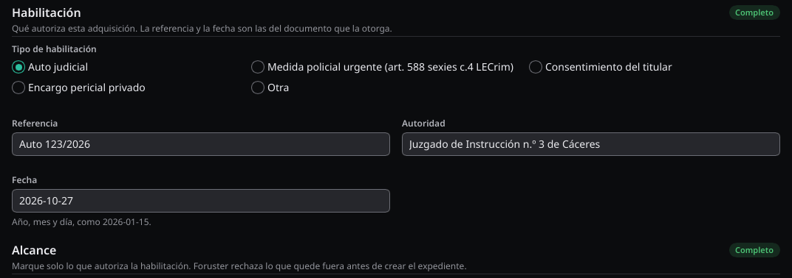
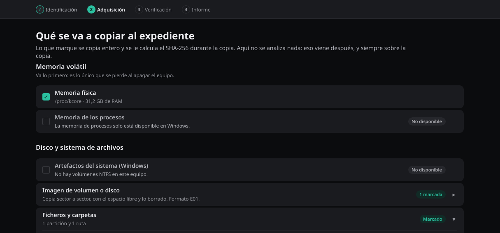

Orden de trabajo
La aplicación sigue cuatro fases, y cada una tiene su apartado en esta documentación:
- Identificación. Los datos del caso, la habilitación y el alcance. Sin ellos, la adquisición no arranca.
- Adquisición. Primero la memoria, si el equipo sigue encendido. Después, los artefactos, los ficheros o la imagen del volumen o del disco.
- Verificación. Comprobar, firmar y sellar el expediente.
- Informe. El informe y el acta de volcado.
Identificación
Hace falta una licencia para adquirir. Cada orden que adquiere pide los mismos datos: número de caso, organización, operador e identificador del operador; la habilitación que autoriza la actuación; y el alcance autorizado. Esos datos se escriben dentro del expediente y el acta los recoge. Si falta alguno, Foruster no crea nada.

Los ejemplos de esta documentación están escritos para bash y guardan los
datos del caso en la variable CASO:
CASO=(--case-number "EXP-1/2026" --organization "Laboratorio" \
--operator "Nombre Apellidos" --operator-id "ID-0001" --location "Cáceres" \
--legal-kind judicial-warrant --legal-reference "Auto 123/2026" \
--legal-authority "Juzgado de Instrucción nº 3" --legal-date 2026-01-15)
En PowerShell, la variable se escribe $CASO = @(...) y se pasa
como @CASO. Las órdenes y las opciones son las mismas en
Linux y en Windows.
Habilitación
--legal-kind | Habilitación |
|---|---|
judicial-warrant | Autorización judicial. |
urgent-police-measure | Medida policial urgente (LECrim art. 588 sexies c.4), pendiente de confirmación judicial. |
holder-consent | Consentimiento del titular. |
private-expert-assignment | Encargo pericial privado. |
other | Otra, descrita en --legal-reference. |
Con judicial-warrant y urgent-police-measure,
--legal-authority es obligatoria. La fecha de la habilitación
no puede ser posterior a hoy. Con una medida policial urgente, el acta
recuerda el plazo de comunicación al juez.
Foruster registra la habilitación que declaras; no comprueba que exista. Anota el tipo, la referencia, la autoridad y la fecha en el expediente y en la auditoría. Que la autorización exista y cubra la actuación es responsabilidad de quien la declara.
Alcance
El alcance es una restricción técnica, no una anotación. Indicas con
--scope qué categorías autoriza la habilitación, una por
opción. Si la orden pide algo que no está autorizado, Foruster lo rechaza
antes de crear el expediente, y fuera del alcance no se copia nada.
El alcance actúa sobre las fuentes y las rutas. Foruster no filtra el contenido de un fichero que pertenece a una categoría autorizada, porque no hay forma técnica de saber si guarda relación con los hechos. El acta lo dice.
--scope | Autoriza |
|---|---|
physical-memory | Memoria física. |
process-memory | Memoria de procesos. |
system-artifacts | Artefactos del sistema. |
volume-image | Imagen de un volumen o de una instantánea. |
disk-image | Imagen de un disco completo. |
selected-files | Ficheros seleccionados.
--scope-path los limita a una ruta. |
Destino
El destino va siempre en otro dispositivo, nunca en el disco de origen. Conecta un soporte propio y escribe ahí cada expediente. Foruster lo comprueba antes de crear nada:
- Compara discos, no particiones. Otra partición del mismo disco cuenta como origen.
- Si no puede saber en qué disco está el destino, como en una carpeta de red, lo rechaza.
- Un directorio de salida que no está vacío se rechaza. Una segunda adquisición nunca sobrescribe la primera.
Solo al adquirir ficheros o artefactos de navegador,
--allow-same-device permite escribir en el mismo disco que
el origen. Eso escribe en el equipo intervenido, así que queda en la
auditoría y el informe lo declara. Para las imágenes y los artefactos de
Windows no hay excepción.

Memoria volátil
En Linux hace falta root. Antes de adquirir nada, comprueba qué se puede hacer en este equipo:
foruster-cli memory --dry-run --output /casos/EXP-1-2026-ram \
"${CASO[@]}" --scope physical-memory
Foruster te indica cuánto va a ocupar la imagen y qué ficheros de
contexto la acompañarán. Quita --dry-run para ejecutar la
adquisición. Si no hay ninguna vía disponible, Foruster no adquiere nada e
indica el motivo.
Foruster no carga ningún módulo en el equipo intervenido. Cargarlo sería modificarlo.
Una imagen de memoria nunca está completa. El equipo sigue trabajando mientras se copia, así que cada tramo se lee en un momento distinto. El hash SHA-256 acredita que la imagen no ha cambiado desde que se adquirió, no que su contenido sea coherente entre sí. Los tramos que no se pueden leer se rellenan a cero y quedan anotados con su dirección. El informe lo dice.
Windows: memoria de procesos
En Windows, Foruster no adquiere memoria física. Adquiere la memoria de los procesos en ejecución, como volcados minidump que leen WinDbg y Volatility. Hace falta una sesión de administrador.
foruster-cli memory --processes --output 'E:\casos\EXP-1-2026-procesos' \
"${CASO[@]}" --scope process-memoryEsos volcados no son memoria física ni una imagen del equipo, y el informe lo declara. No incluyen la memoria del núcleo ni la de procesos ya terminados. Volcar un proceso suspende sus hilos mientras dura la copia. Un proceso protegido que rechaza el volcado queda anotado con su motivo, y la sesión no figura como completa.
Artefactos y ficheros
Foruster recoge artefactos concretos de las rutas donde suelen estar, sin clonar el disco entero. El catálogo cubre cookies e historial de Chrome y de Firefox, en Linux y en Windows, y en Windows además la memoria que el sistema ha escrito en disco: hibernación y paginación.
foruster-cli artifacts --existing-only
foruster-cli artifacts --existing-only --locator firefox-cookies-linux \
--acquire /casos/EXP-1-2026-artefactos "${CASO[@]}" --scope selected-files
Las bases de datos viajan siempre con sus ficheros auxiliares
(-wal, -shm, -journal). Sin ellos, una
base en modo WAL llega incompleta, y el informe lo declara.
Para rutas concretas:
foruster-cli acquire --path /ruta --output /casos/EXP-1-2026 \
"${CASO[@]}" --scope selected-filesArtefactos de Windows
Foruster recoge las colmenas del registro, los registros de eventos,
Amcache, prefetch, SRUM, accesos directos y listas de saltos,
$MFT, el diario USN y $LogFile. Los lee del NTFS
del volumen en crudo, así que también copia los ficheros que el sistema
mantiene bloqueados. Hace falta una sesión de administrador.
foruster-cli windows-artifacts --list
foruster-cli windows-artifacts --volume C: --output 'E:\casos\EXP-1-2026-win' \
"${CASO[@]}" --scope system-artifacts
--target limita la recogida a los objetivos que indiques. Sin
ella, se recogen todos.
Foruster recoge estos artefactos, no los interpreta. Los copia con su hash SHA-256 y su procedencia para que los analices con la herramienta de tu laboratorio. Un volumen en uso no se lee de forma atómica, así que la sesión nunca figura como completa. Un fichero que solo es un marcador de la nube, como los de OneDrive, se declara como tal y no se presenta como su contenido.